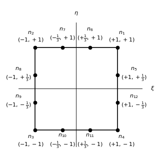

Cubic element of the Serendipity family¶
Zienkiewicz and Taylor (2000) [zienkiewicz2000v1] present a rectangular
cubic element of the Serendipity family (in Chapter 8) which will be described
here, focusing on its implementation using an isoparametric approach, i.e.
the same approximation used for the geometry will be used to approximate
the displacement field vector  .
.
The element and the 12 nodes are shown in the figure below.

The variables of are interpolated using:

where  and
and  represent the interpolation and the displacement
vector at node
represent the interpolation and the displacement
vector at node  . The interpolation function for the corner nodes are:
. The interpolation function for the corner nodes are:
![h_{1,\cdots,4} = \frac{1}{32}(1 + \xi\cdot\xi_{1,\cdots,4})
(1 + \eta\cdot\eta_{1,\cdots,4})[-10 + 9\cdot(\xi^2 + \eta^2)]](../../_images/math/14af442b41c9bfb16ac031f4ab975f8d4cbf0db1.png)
and for the middle nodes are:

The coordinates for each node